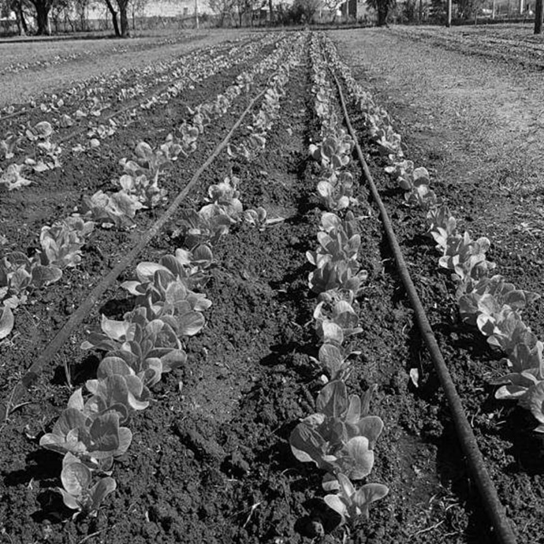

Consideramos fundamental aportar a la concientización y creación de prácticas comunitarias que tengan por objetivo revertir los servicios ecosistémicos y crear condiciones de vida sostenibles. Creemos necesario incentivar la construcción de vínculos y redes que construyan territorialidad y sentido de pertenencia con el lugar

Proyectos ambientales:
Agroecología, Patrimonio Natural y Biodiversidad, Economía Circular
A través de la puesta en marcha de proyectos ambientales buscamos generar un impacto positivo en las comunidades a escala local implementando distintas acciones y actividades que abarcan desde capacitaciones teóricas hasta prácticas territoriales. De esta manera, generamos nuevos circuitos económicos locales que se sustentan sobre las bases del Desarrollo Sostenible y el Buen Vivir. En esta línea, impulsamos el desarrollo de huertas, invernaderos y viveros, llevamos adelante campañas de concientización y valorización de la biodiversidad y acompañamos procesos comunitarios asociados a la Economía Circular otorgando visibilidad a la labor realizada por los recuperadores y recicladores urbanos.